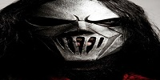

«Slipknot» [ˈslɪp.nɒt] (в переводе с англ. — «скользящий узел», «петля», «удавка») — американская метал-группа, образованная в сентябре 1995 года в Айове, США. Альбомы группы получили статус платиновых, всего продано более 30 млн копий по всему миру из которых 6 миллионов в США. В 2006 году группа получила свою единственную на сегодняшний день премию «Грэмми». Коллектив известен тем, что его участники на концертах, фотосессиях и интервью носят маски и специальные комбинезоны. Маски видоизменяются с выходом нового альбома. На данный момент группа выпустила семь официальных студийных альбомов. Последний на данный момент альбом группы, The End, So Far, вышел 30 сентября 2022 года.
 Утром:
1.прес качат
2.бегит
3.турник
4.анжуманя
вечером:
1.прес качат
2.бегит
3.турник
4.анжуманя
5.гантели